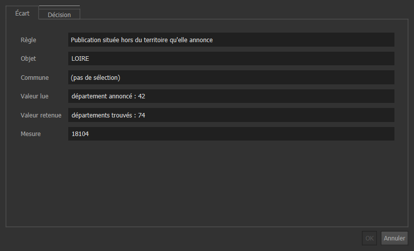

Les gestes courants : comptes, interventions, écarts, nouvelle publication, sauvegarde.
La base est une instance PostgreSQL propre au projet (port 5436). Après un redémarrage du poste, lancez demarrer_base.bat. Les requêtes ci-dessous s'exécutent dans DBeaver ou psql, avec un compte propriétaire pour les comptes et les sauvegardes. Le projet QGIS de ce profil est eclairage_administrateur.qgz.
-- Une collectivité : une ou plusieurs communes
SELECT admin.creer_compte('mairie_reze', 'ep_collectivite', ARRAY['44143']::char(5)[]);
-- Une entreprise : son périmètre, et le titulaire de ses interventions
INSERT INTO admin.entreprise (nom) VALUES ('Nom de l''entreprise');
SELECT admin.creer_compte('entreprise_x', 'ep_entreprise', ARRAY['44143', '44020']::char(5)[],
(SELECT id FROM admin.entreprise WHERE nom = 'Nom de l''entreprise'));
-- Élargir un périmètre : relancer creer_compte avec la nouvelle liste de communes
-- Retirer l'accès
ALTER ROLE mairie_reze NOLOGIN;Profils : ep_administrateur, ep_collectivite, ep_entreprise, ep_lecture. Les droits et le périmètre sont portés par la base : le même compte donne le même résultat dans QGIS, DBeaver ou un autre outil.
Avant toute ouverture à d'autres postes. L'instance de démonstration accepte les connexions locales sans mot de passe. Il faut donner un mot de passe à chaque compte (ALTER ROLE ... PASSWORD), passer pg_hba.conf en scram-sha-256 et n'écouter que le réseau voulu. Les projets QGIS ne contiennent aucun mot de passe.
Le paquet du téléphone est extrait avec le compte de la collectivité : il contient son périmètre, sans connexion à la base ni mot de passe. Refaites-le pour remettre à jour les points et les signalements en cours.
cd scripts
"C:\Program Files\QGIS 3.34.12\bin\python-qgis-ltr.bat" -u 08c_paquet_qfield.py --compte mairie_reze
# écrit projets\qfield\eclairage_terrain_mairie_reze.zip
python 13_importer_terrain.py retour.zip --port 5436 --compte mairie_rezePour le compte de démonstration, glissez le dossier ou le .zip reçu sur importer_pannes_terrain.bat. Le bilan doit tomber juste : reçues = importées + déjà importées + refusées. Le détail de chaque ligne est dans livrables/terrain/, motifs de refus compris. L'import signale aussi un point qui a déjà un signalement ouvert : la panne est gardée, à vous de voir s'il s'agit d'un doublon. declare_le donne l'arrivée en base, constate_le l'heure du téléphone.
Vue « Contrôle de la reprise », couche Écarts de contrôle, onglet Décision : « Confirmée », « Faux positif » ou « Corrigée », avec un commentaire. Votre nom et la date s'ajoutent à l'enregistrement. Une décision survit aux passes de contrôle suivantes.

cd scripts
python 01_telecharger.py # collecte datée, avec empreinte
python 02_charger_sources.py # un fichier déjà chargé est ignoré ; différentiel dans flux.ecart_lot
python 03_reprise.py # met à jour sans réécrire ce qui n'a pas changé
python 04_controles.py # bilan et écarts
python 05_export_eclext.py # fichiers au format d'échange
python 06_recette_geo.py # contrôle indépendant des fichiersPuis vérifiez dans cet ordre :
SELECT * FROM controle.bilan_reprise; -- la colonne ecart doit valoir 0
SELECT source, nature, count(*) FROM flux.ecart_lot GROUP BY 1, 2;
SELECT * FROM controle.bilan_regle WHERE nb_ecarts > 0;Toute écriture hors reprise sur une armoire, un support ou un point (fiche QGIS, DBeaver, intervention) coche « Modifié après la reprise » : la publication suivante n'écrase pas cet objet, et le filtre enregistré du même nom les retrouve. Pour redonner la main à la source, remettez maj_locale à faux avec SET LOCAL app.reprise = 'on' dans la même transaction. Un objet absent du nouveau fichier n'est pas supprimé : il reçoit une date dans retire_le et sort de l'export.
pg_dump -Fc -h localhost -p 5436 -U postgres eclext > eclext_AAAAMMJJ.dump
-- Qui a changé quoi sur un point
SELECT quand, qui, action, avant, apres FROM audit.journal
WHERE table_nom = 'metier.point_lumineux' AND objet_id = 63357 ORDER BY quand DESC;Les photos du terrain ne sont pas dans la base, qui garde seulement leur nom : sauvegardez aussi data/terrain/photos.